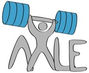

AXLE brings together a diverse group of researchers covering hardware, database kernel and visualisation experts all focused on solving the needs of extremely large data analysis.
The objectives of the AXLE project are to greatly improve the speed and quality of decision making on real-world data sets. AXLE aims to make these improvements generally available through high quality open source implementations via the PostgreSQL and Orange products.
AXLE is aimed for use on databases with these characteristics:
Read more about the project and its deliverables.